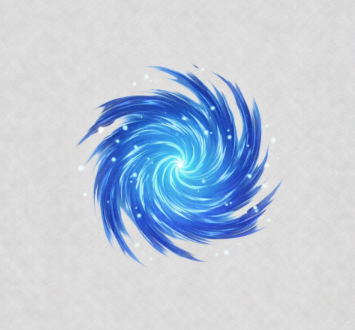

💥 CHAKRA LEAK
ELEMENTAL 250
MASTERY 250
COMMON
Chakra Burst
Mastery 1
Delivers a chakra-charged punch that deals
49 damage. (Knockback)
20 Chakra
🕒 8s Cooldown
Chakra Step
Mastery 25
Delivers a chakra-charged kick that deals
115 damage. (Knockback)
50 Chakra
🕒 15s Cooldown
Chakra Overload
Mastery 75
Generates a short burst of chakra that deals
226 damage. (Knockback)
100 Chakra
🕒 35s Cooldown
Chakra Launch
Mastery 10
Leaps forward, dealing
82 damage.
Varies
🕒 1s Cooldown